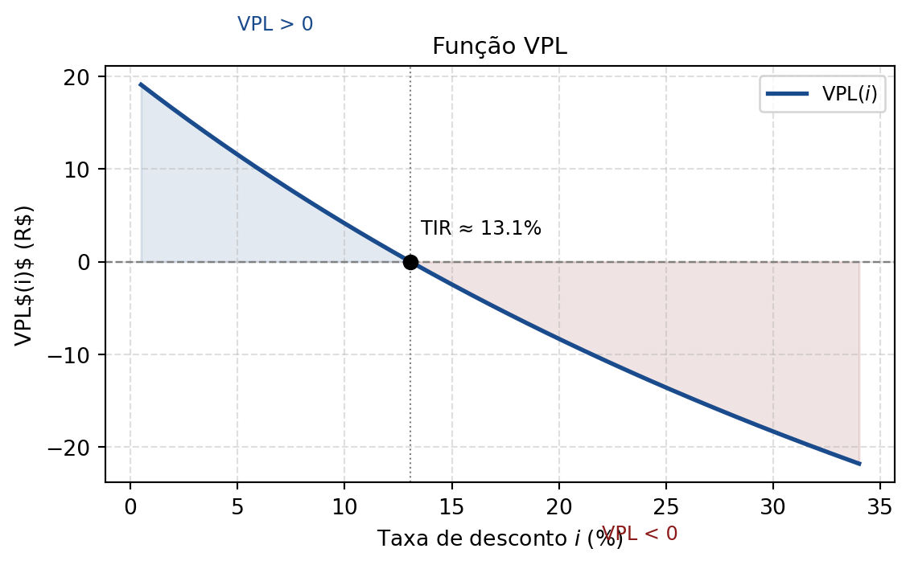
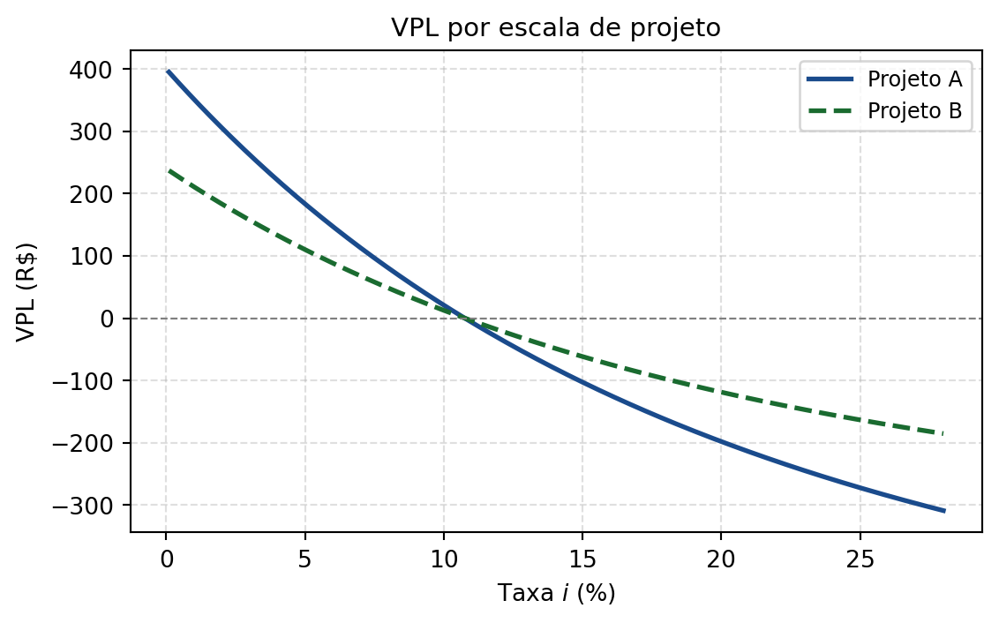
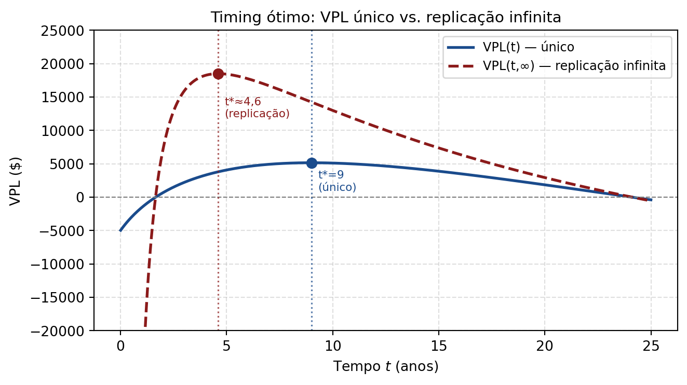

7 Análise de Investimentos
7.1 O que é Avaliação de Investimentos?
Baseado em Damodaran (2012), Capítulos 1 e 2.
Avaliação de investimentos é o processo de estimar o valor de um ativo com base em seus fundamentos econômicos. É essencial para decisões de compra, venda, fusão ou financiamento de projetos.
ImportantValor ≠ Preço
O preço de mercado de um ativo pode estar acima ou abaixo do seu valor intrínseco — estimado a partir de fundamentos como fluxos de caixa futuros, risco e horizonte de tempo. Essa divergência é justamente o que cria oportunidades de investimento.
Tipos de Valor
| Tipo | Definição | Quando usar |
|---|---|---|
| Contábil | Valor registrado no balanço (custo histórico) | Comparações patrimoniais |
| De mercado | Preço corrente observado em bolsa ou transações | Referência de precificação |
| Intrínseco | Valor presente dos fluxos de caixa futuros esperados | Decisões de investimento |
A diferença entre valor de mercado e valor intrínseco é o ponto de partida de toda análise fundamentalista.
Por que Avaliar?
A avaliação de investimentos serve a diferentes agentes econômicos com objetivos distintos:
- Investidores: decidir comprar ou vender ações com base em se o preço está abaixo ou acima do valor intrínseco.
- Gestores: identificar oportunidades e riscos em projetos de expansão, aquisição ou desinvestimento.
- Credores: analisar a solvência e a capacidade de pagamento da empresa antes de conceder crédito.
- Analistas: emitir recomendações de investimento fundamentadas em modelos quantitativos.
Os Três Pilares da Avaliação
TipPilares fundamentais (Damodaran)
Todo modelo de avaliação se apoia em três variáveis centrais:
- Fluxos de caixa — o que o ativo vai gerar de caixa no futuro (receitas, lucros, dividendos).
- Risco — a incerteza associada a esses fluxos, que determina a taxa de desconto adequada.
- Tempo — o horizonte de vida do ativo e o momento em que os fluxos serão recebidos.
Diferentes modelos variam na forma como estimam e combinam esses três elementos.
Principais Modelos de Avaliação
Os modelos se dividem em três grandes famílias:
1. Fluxo de Caixa Descontado (FCD / DCF) Desconta os fluxos futuros esperados a uma taxa que reflita o risco. É o modelo mais rigoroso e internamente consistente. O VPL (Valor Presente Líquido) é sua aplicação direta na avaliação de projetos.
2. Avaliação Relativa (Múltiplos) Compara o ativo com pares usando múltiplos de mercado como P/L (preço/lucro), EV/EBITDA ou P/VPA. É rápido e amplamente usado na prática, mas depende da qualidade dos comparáveis.
3. Modelos de Opções Reais Trata a flexibilidade gerencial (adiar, expandir, abandonar um projeto) como opções financeiras. É especialmente útil para projetos com alta incerteza e valor de espera significativo — como a Poda da Árvore estudada adiante.
NotePor que duas pessoas avaliam o mesmo ativo de forma diferente?
A avaliação não é objetiva: diferentes analistas podem chegar a valores distintos para o mesmo ativo porque divergem em suas estimativas de fluxos de caixa futuros, na taxa de desconto usada, no horizonte considerado e nos pressupostos de crescimento. A avaliação reflete tanto a análise quanto os julgamentos de quem a realiza.
7.2 Risco e Retorno: Introdução
Todo investimento envolve um trade-off fundamental: entre projetos com mesmo retorno, escolhe-se o de menor risco; entre projetos com mesmo risco, escolhe-se o de maior retorno.
Para mensurar e comparar projetos, três ferramentas centrais são: (1) VPL (Valor Presente Líquido): maximiza o lucro absoluto; (2) TIR (Taxa Interna de Retorno): mede a rentabilidade relativa; (3) TIRM (TIR Modificada): corrige uma limitação da TIR.
7.3 Valor Presente Líquido (VPL)
TipDefinição
Dado um projeto com investimento inicial \(P\) e fluxos de receita \(\{R_1, R_2, \ldots, R_n\}\), o Valor Presente Líquido é:
\[\text{VPL}(i) = -P + \sum_{t=1}^n \frac{R_t}{(1+i)^t},\]
onde \(i\) é a taxa livre de risco (custo de oportunidade).
Regra de decisão
ImportantResultado
\[\begin{cases} \text{VPL} > 0: & \text{custo de oportunidade} < \text{TIR} \quad\Rightarrow\quad \text{vale investir;} \\ \text{VPL} = 0: & \text{equilíbrio econômico} \quad (i = \text{TIR}); \\ \text{VPL} < 0: & \text{custo de oportunidade} > \text{TIR} \quad\Rightarrow\quad \text{não vale investir.} \end{cases}\]
Propriedades da função VPL
Admitindo todos os fluxos intermediários positivos (\(R_t > 0\)), a função \(\text{VPL}(i)\) é decrescente (\(\text{VPL}'(i) < 0\)) e convexa (\(\text{VPL}''(i) > 0\)).
7.4 Taxa Interna de Retorno (TIR)
TipDefinição
A TIR é a taxa \(r^*\) que zera o VPL:
\[P = \sum_{t=1}^n \frac{R_t}{(1+r^*)^t} \quad\Leftrightarrow\quad \text{VPL}(r^*) = 0.\]
Unicidade da TIR — Regra de Descartes
A equação \(\text{VPL}(r) = 0\) é um polinômio de grau \(n\) que pode ter múltiplas raízes reais positivas.
ImportantResultado — Regra de Descartes
O número de raízes reais positivas é no máximo igual ao número de mudanças de sinal na sequência de fluxos \(\{-P, R_1, R_2, \ldots, R_n\}\).
Há unicidade quando existe exatamente uma inversão de sinal. Projetos com múltiplas saídas de caixa intermediárias podem ter várias TIRs.
7.5 Método de Newton–Raphson para Calcular a TIR
Como a TIR não tem forma fechada em geral, usa-se métodos numéricos. O método de Newton–Raphson obtém aproximações sucessivas da raiz de \(f(r) = \text{VPL}(r) = 0\):
ImportantResultado
\[x_0 = \frac{f(0)}{f'(0)}, \qquad x_{k+1} = x_k - \frac{f(x_k)}{f'(x_k)}.\]
Geometricamente, cada iteração traça a tangente à curva \(f\) no ponto atual e usa a interseção com o eixo \(x\) como próxima estimativa.
7.6 VPL vs. TIR: Conflitos
Projetos de escalas diferentes
Quando dois projetos têm a mesma TIR mas escalas de investimento distintas, a TIR pode indicar um projeto menor; o VPL a taxas baixas pode indicar o maior. O VPL prevalece: maximiza a riqueza absoluta do investidor.

Projetos com ciclos de vida diferentes
Quando os projetos têm horizontes distintos, o método da TIR é superior para comparar a taxa de retorno por período. O VPL de projetos maiores sempre será maior — o que não reflete eficiência.
7.7 TIR Modificada (TIRM)
A premissa implícita da TIR é que as receitas intermediárias são reinvestidas à própria TIR. Isso é irreal em muitos contextos.
TipDefinição
A TIRM reinveste as receitas à taxa de mercado \(i\) e compara com o valor presente dos investimentos:
\[P\,(1+\text{TIRM})^n = \sum_{t=1}^n R_t(1+i)^{n-t} \quad\Rightarrow\quad \text{TIRM} = \left(\frac{\text{Valor acumulado das receitas}}{P}\right)^{1/n} - 1.\]
7.8 VPL com Replicação Infinita — \(VPL(n, \infty)\)
Até aqui, as ferramentas de VPL e TIR assumiam uma duração fixa do projeto. Mas e se a duração for a própria decisão? E se o projeto for replicável — ao final de cada ciclo de \(n\) anos, podemos reiniciar um ciclo idêntico indefinidamente?
Para projetos replicáveis, o critério correto é maximizar o VPL de um fluxo infinito de replicações:
\[VPL(n, \infty) = VPL(n) + \frac{VPL(n)}{(1+k)^n} + \frac{VPL(n)}{(1+k)^{2n}} + \cdots\]
Reconhecendo a progressão geométrica com razão \(\alpha = \frac{1}{(1+k)^n}\):
\[VPL(n, \infty) = VPL(n)\left(1 + \alpha + \alpha^2 + \cdots\right) = \frac{VPL(n)}{1 - \frac{1}{(1+k)^n}}\]
ImportantResultado — VPL com Replicação Infinita
\[\boxed{VPL(n,\infty) = \frac{VPL(n)}{1 - \frac{1}{(1+k)^n}}}\]
Para tempo contínuo (taxa contínua \(k\)):
\[\boxed{VPL(t,\infty) = -c + \frac{V(t) - c}{e^{kt} - 1}}\]
onde \(V(t)\) é o valor do ativo no momento da colheita, \(c\) é o custo inicial e \(k\) o custo de oportunidade.
7.9 Duração Ótima: Problema da Poda da Árvore
O problema clássico de timing ótimo aparece quando o valor de um ativo cresce com o tempo e precisamos decidir quando colher. Exemplos: plantio de árvores, envelhecimento de uísque, exploração de recursos naturais, venda de empresa em crescimento.
Configuração do Problema
Assuma um bosque de árvores cuja receita de colheita no instante \(t\) é dada por:
\[V(t) = 10.000\sqrt{1+t}\]
Parâmetros: - Custo inicial: \(c = \$15.000\) - Custo de oportunidade: \(k = 5\%\) a.a. (contínuo) - VPL de uma colheita única no instante \(t\):
\[VPL(t) = V(t)\cdot e^{-kt} - c = 10.000\sqrt{1+t}\cdot e^{-0{,}05t} - 15.000\]
O objetivo é encontrar \(t^*\) que maximiza essa função.
Abordagem 1: Maximização do VPL (Projeto Único)
Para um projeto não replicável (única colheita), maximizamos \(VPL(t)\) derivando e igualando a zero:
\[\frac{d(VPL)}{dt} = \left[\frac{dV(t)}{dt}\cdot e^{-kt} + V(t)\cdot(-ke^{-kt})\right] = 0\]
\[\Rightarrow \frac{dV(t)/dt}{V(t)} = k\]
ImportantRegra de Ouro do Timing Ótimo
O momento ótimo de colher é quando a taxa de crescimento marginal do ativo se iguala ao custo de oportunidade do capital.
\[\frac{V'(t)}{V(t)} = k\]
Aplicando ao nosso exemplo:
\[\frac{dV}{dt} = \frac{10.000}{2\sqrt{1+t}}, \qquad \frac{V'(t)}{V(t)} = \frac{10.000}{2\sqrt{1+t}} \cdot \frac{1}{10.000\sqrt{1+t}} = \frac{1}{2(1+t)} = k = 0{,}05\]
\[\Rightarrow 1 + t = \frac{1}{2 \times 0{,}05} = 10 \quad\Rightarrow\quad \mathbf{t^* = 9 \text{ anos}}\]

Abordagem 2: Maximização da TIR
A TIR de uma colheita única no instante \(t\) satisfaz \(VPL = 0\):
\[V(t)\cdot e^{-it} = c \quad\Rightarrow\quad i = \frac{\ln(V(t)/c)}{t}\]
Maximizando em relação a \(t\):
\[\frac{di}{dt} = \frac{1}{t}\left[\frac{V'(t)}{V(t)} - \frac{\ln(V(t)/c)}{t}\right] = 0 \quad\Rightarrow\quad \frac{V'(t)}{V(t)} = i\]
A regra é a mesma estrutura — colher quando a taxa de crescimento marginal iguala a TIR — mas a TIR assume que as receitas intermediárias são reinvestidas à própria TIR do projeto, não ao custo de oportunidade \(k\).
ImportantPor que a TIR leva a uma decisão subótima?
A TIR assume que os fluxos gerados pela colheita poderiam ser reinvestidos à própria TIR do projeto, o que é irrealista. A taxa de reinvestimento mais sólida é o custo de oportunidade \(k\). Por isso, a maximização da TIR geralmente leva a colher mais cedo do que o ótimo.
No exemplo: \(t^* \approx 4 \text{ anos}\) pela TIR vs. \(t^* = 9 \text{ anos}\) pelo VPL único. \[TIR(t=4) \approx 9{,}98\%\]
Abordagem 3: Maximização do VPL com Replicação \(VPL(t, \infty)\)
Para um bosque de árvores (ativo replicável), o objetivo é maximizar o valor de um fluxo infinito de colheitas:
\[VPL(t, \infty) = -c + \frac{V(t) - c}{e^{kt} - 1}\]
Derivando em relação a \(t\) e igualando a zero:
\[\frac{dVPL(t,\infty)}{dt} = 0 \quad\Rightarrow\quad \frac{dV(t)}{dt} = \frac{k(V(t)-c)}{1-e^{-kt}}\]
ImportantRegra de Ouro com Replicação
O ganho marginal de esperar deve igualar o custo de oportunidade de adiar a perpetuidade:
\[V'(t) = \frac{k\,(V(t) - c)}{1 - e^{-kt}}\]
Resolvendo numericamente: \(\mathbf{t^* \approx 4{,}61 \text{ anos}}\).
Comparação dos Três Critérios
| Critério | \(t^*\) | TIR | \(VPL_{k=5\%}\) | \(VPL(t,\infty)\) |
|---|---|---|---|---|
| VPL máximo (único) | 9 anos | 8,29% | $5.160 | $14.249 |
| VPL(∞) com replicação | 4,61 anos | 9,91% | $3.810 | $18.505 |
| TIR máxima | 4 anos | 9,98% | $3.320 | $18.245 |
TipQuanto vale a terra?
O valor criado pela melhor estratégia (replicação com \(t \approx 4{,}6\) anos) é o VPL máximo com replicação: $18.500.
O valor total da terra (o ativo subjacente) inclui também o custo do primeiro plantio:
\[\text{Valor da Terra} = VPL(t^*, \infty) + c = \$18.500 + \$15.000 = \mathbf{\$33.500}\]
Projetos Replicáveis vs. Não Replicáveis
A escolha do critério correto depende da natureza do projeto:
NoteProjetos Únicos e Não Replicáveis
Exemplos: venda de uma empresa, projeto de P&D para patente específica, exploração de mina.
Abordagem correta: Maximização do VPL simples.
Por quê? Se não existe oportunidade de repetir o ciclo, a melhor decisão é esperar até \(t = 9\) anos — o ponto de máximo do VPL único.
ImportantProjetos Replicáveis
Exemplos: plantio de árvores, envelhecimento de uísque, gestão de ativos renováveis.
Abordagem correta: Maximização do VPL com Replicação \(VPL(t, \infty)\).
Por quê? Maximiza a riqueza ao otimizar o uso do ativo subjacente (a terra, a destilaria) para um fluxo infinito de ciclos. A melhor decisão é colher a cada \(t \approx 4{,}6\) anos.
7.10 Índice de Sharpe e Risco
Para comparar ativos com diferentes perfis de risco, define-se o retorno histórico:
\[r_t = \frac{P_t - P_{t-1}}{P_{t-1}}, \qquad \bar{r} = \frac{1}{n}\sum_{t=1}^n r_t, \qquad \sigma = \sqrt{\frac{\sum_{t=1}^n (r_t - \bar{r})^2}{n-1}}.\]
TipDefinição
O Índice de Sharpe mede o excesso de retorno por unidade de risco:
\[S_i = \frac{r_i - r_f}{\sigma_i},\]
onde \(r_f\) é a taxa livre de risco. Quanto maior \(S_i\), melhor o ativo em termos de risco–retorno.
TipExemplo moderno — Análise de projeto de energia solar (2025)
Uma empresa estuda instalar painéis solares com: investimento inicial R$ 120.000, economia anual em energia R$ 20.000/ano por 10 anos, taxa de desconto (WACC) \(8\%\) a.a.
\[\text{VPL} = 20.000\left[\frac{(1{,}08)^{10}-1}{0{,}08}\right]\frac{1}{(1{,}08)^{10}} - 120.000 \approx \textbf{R\$ 14.205.}\]
Como VPL \(> 0\), o projeto cria valor. A TIR implícita \(\approx 10{,}56\%\) a.a., superior ao WACC de \(8\%\). Com créditos de carbono adicionando R$ 2.000/ano, o VPL sobe para \(\approx\) R$ 27.600.